About Me
Intro
Hi! I'm Debby, a junior at University of Michigan's School of Information studying User Experience design. I aspire to work as a product designer, to create user-centered services, my main passions being towards inclusivity and the diversification of products for marginalized groups in need of amplified voices.
I am currently working as a web designer for the University of Michigan's Multidisciplinary Design Program, where I work with clients to implement different design solutions for website pages. My core values consist of working to be proactive and communicative with clients to create intuitive products that align with all parties involved.
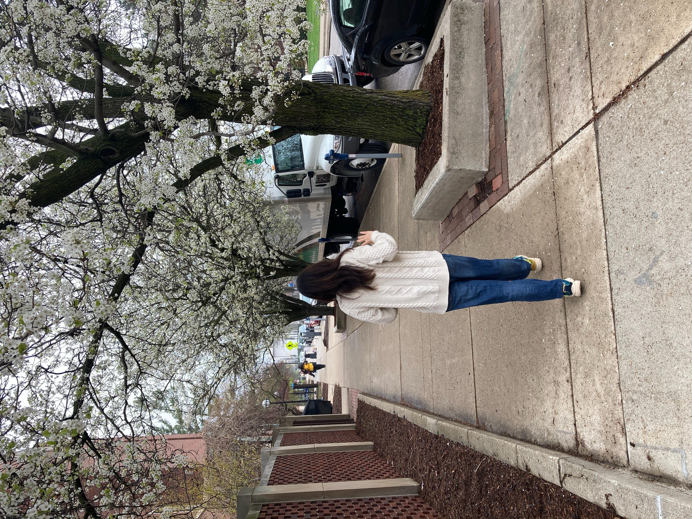Future plans
I plan to graduate from University of Michigan's School of Information with a Bachelor of Science in Information and a double-minor in both Computer Science and Art & Design. With an Art & Design minor focus in 3-dimensional design, I hope to combine my academic experiences to work as a multidisciplinary designer for both mobile and physical products.
When I'm not designing...
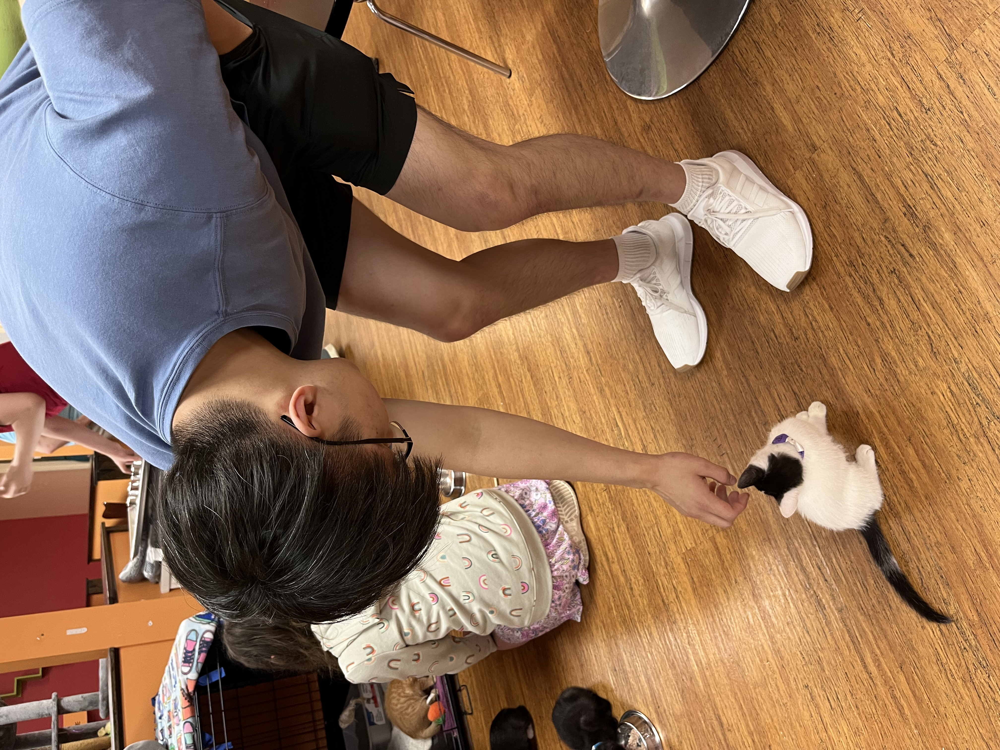 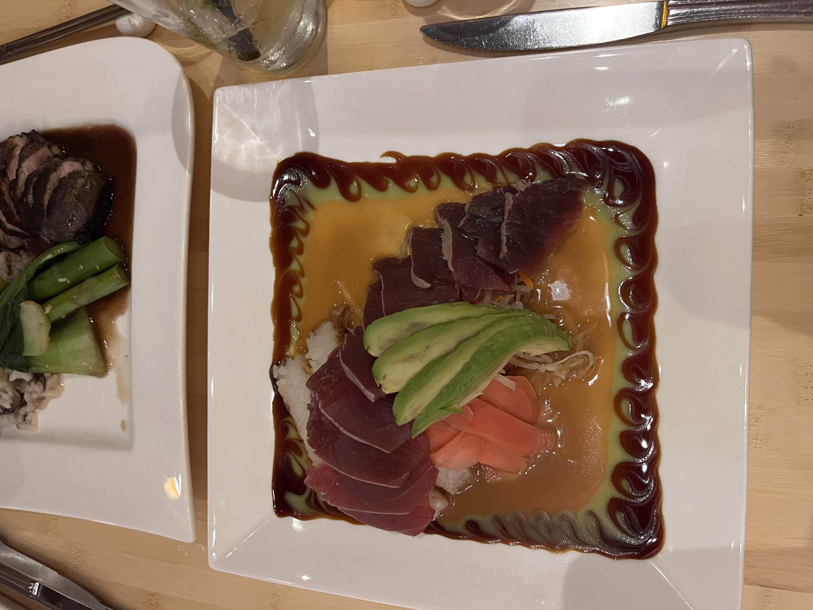 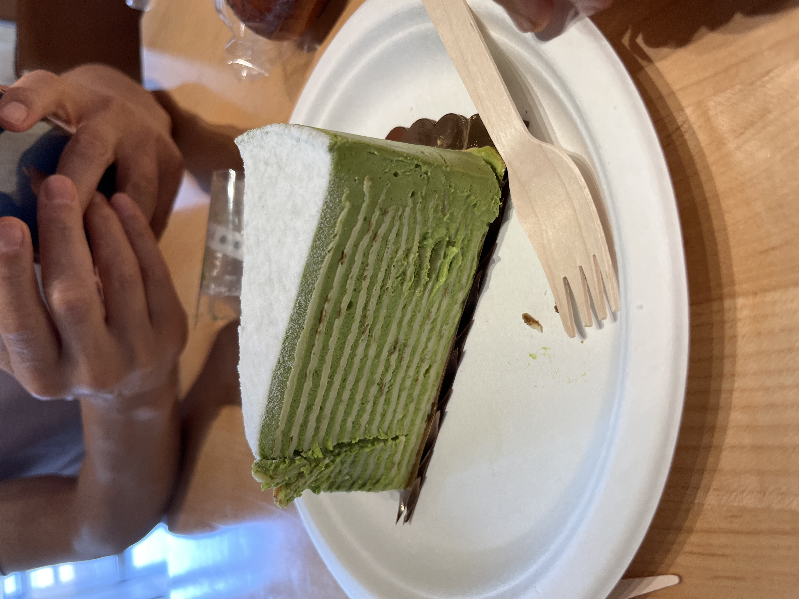 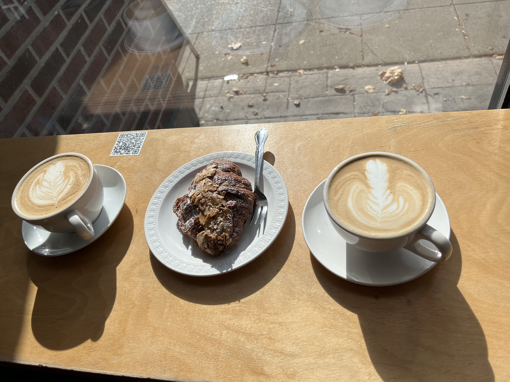 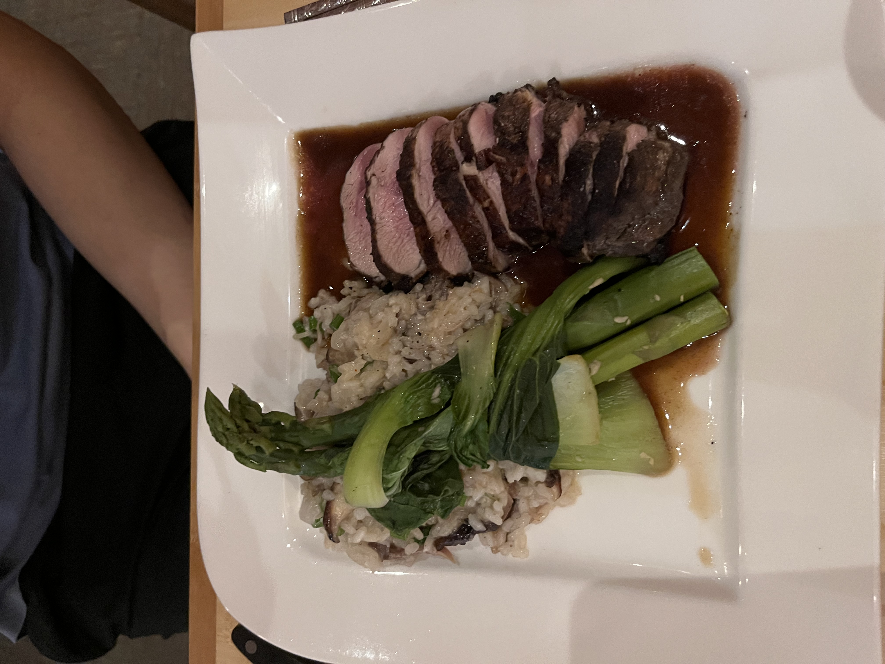 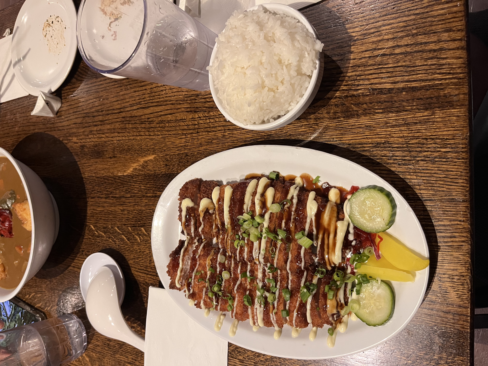 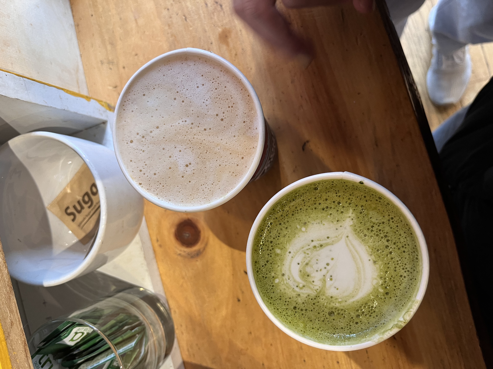 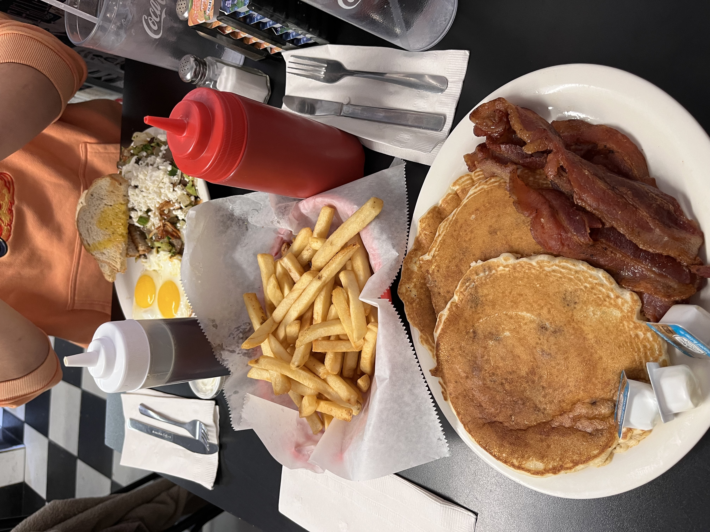 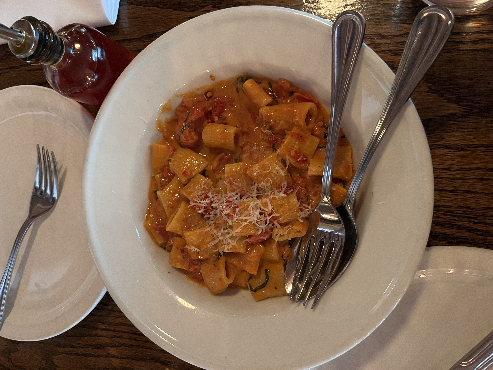 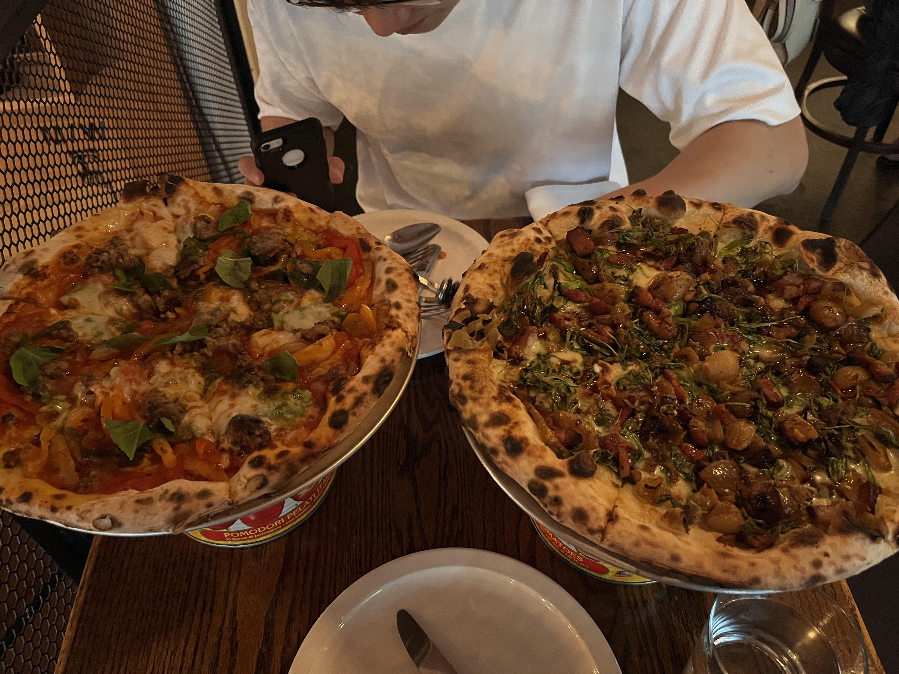 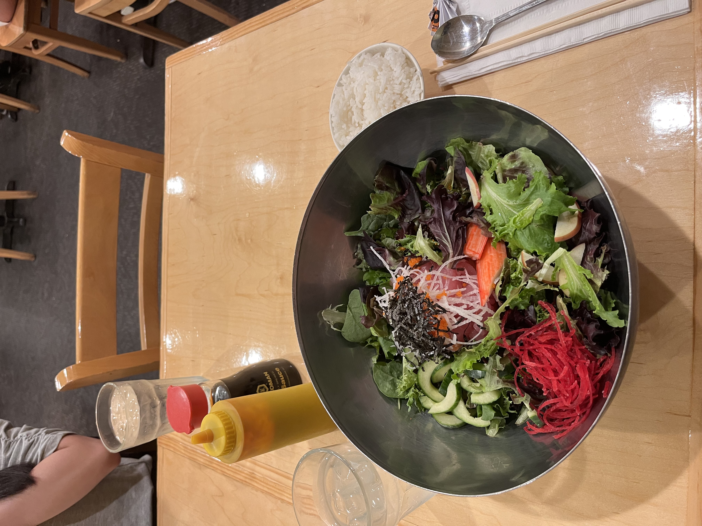 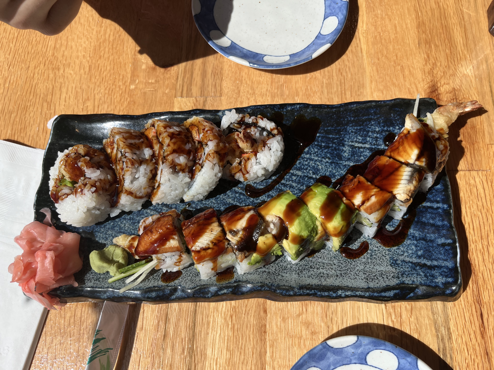I love to try new foods and explore Ann Arbor!